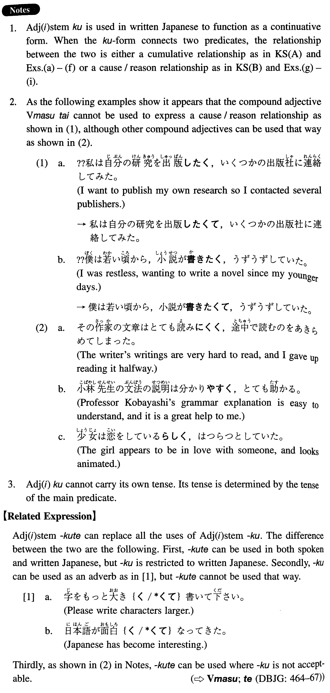

- (ksa).
- 加奈子の性格は明るく、無邪気だった。
- Kanako's personality was cheerful and innocent.
- (ksb).
- せっかく講演をしに行ったのに、聴衆が少なく、がっかりした。
- I went all the way to give a lecture, but the audience was so small that I felt discouraged.
- (a).
- カルフォルニアの空は青く、美しかった。
- The Californian sky was blue and beautiful.
- (b).
- トムの東京のアパートの部屋は暗く、狭い。
- Tom's apartment room in Tokyo is dark and small.
- (c).
- バッハの音楽は歯切れがよく、幾何学的だ。
- Bach's music is very crisp and geometrical.
- (d).
- ニューヨークタイムズは質が高く、購読者の数も多い。
- The New York Times is high in quality and has many subscribers.
- (e).
- 世界の平和は得られにくく、維持しにくい。
- World peace is hard to achieve and hard to maintain.
- (f).
- あの哲学者の思想は分かりやすく、文章も簡潔だ。
- That philosopher's ideas are easy to understand and his writing is simple, too.
- (g).
- 去年の冬は雪が多く、車の運転が大変だった。
- Last winter there was much snow and it was hard to drive around.
- (h).
- 私は失敗が恐ろしく、新しいことが何も出来ない。
- I'm afraid of failure, and I can't do anything new.
- (i).
- 洋子は一人でいるのが寂しく、最近猫を飼い始めた。
- Yoko felt lonely living alone, so she got a pet cat recently.
